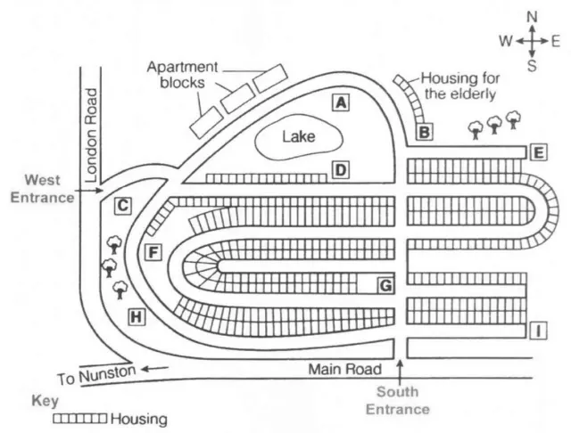

Part 1 of 4
Working at Milo’s Restaurants
Questions 1–10
Questions 1–10
Complete the notes below.
Write ONE WORD ONLY for each answer.
Complete the table below.
Write ONE WORD AND/OR A NUMBER for each answer.
| Location | Job title | Responsibilities include | Pay and conditions |
|---|---|---|---|
| Street | Breakfast supervisor | Checking portions, etc. are correct Making sure is clean | Starting salary per hour Start work at 5.30 a.m. |
| City Road | Junior chef | Supporting senior chefs Maintaining stock and organising | Annual salary £23,000 No work on a once a month |
Questions 11–20

Label the map below.
Write the correct letter, A–I, next to Questions 15–20.
Questions 21–30
Choose the correct letter, A, B or C.
What comment do the students make about the impact of the Laki eruption on the following countries?
Choose FOUR answers from the box and write the correct letter, A–F, next to Questions 27–30.
Questions 31–40
Complete the notes below.
Write ONE WORD ONLY for each answer.